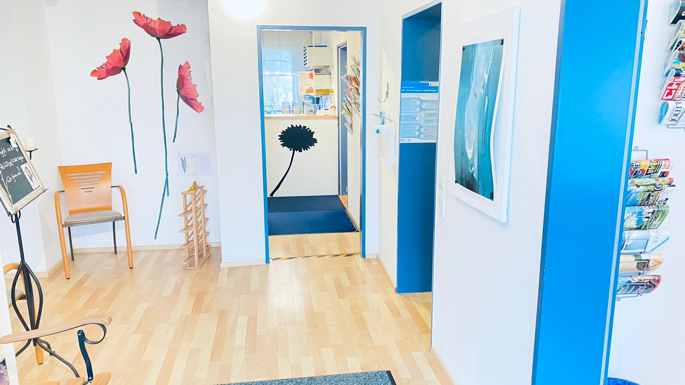

Über Mich & Praxis
Ab April 2022 habe ich die seit 2007 etablierte Hausarzt Praxis meiner hochverehrten Kollegin Dr. med. Ines Ahlhelm übernommen.
Das Studium der Humanmedizin habe ich an der “Sapienza” Universität-Rom absolviert. Anschließend folgten im Rahmen meiner Facharztausbildung verschiedene internistische Stationen im Universitätsklinikum Rom, sowie im Universitätsklinikum Giessen.
Nach meiner Facharztanerkennung für Innere Medizin 2015 in Hessen, habe ich von 2015 bis 2021 meine Weiterbildung zur Kardiologin im Herz-Zentrum Bodensee komplettiert.
In Rahmen meiner vielen Interessen, habe ich von 2016 bis 2021 auch das Diplom in ästhetischer Medizin an der Internationalen Schule für Ästhetische Medizin in Rom erworben.
Mein breites Fachwissen, sowie meine Erfahrung in den verschiedenen Bereichen der Inneren Medizin und der Kardiologie, möchte ich in den Dienst ihrer Gesundheit stellen.
Ich will Sie als Menschen im gesamten Spektrum der Allgemein- und Inneren Medizin betreuen und begleiten, Ihr Vertrauen gewinnen und in bewährter Tradition meiner Vorgängerin für Sie da sein.
Ich freue mich auf Sie, herzlichst
Dott.ssa Irma Kushta
